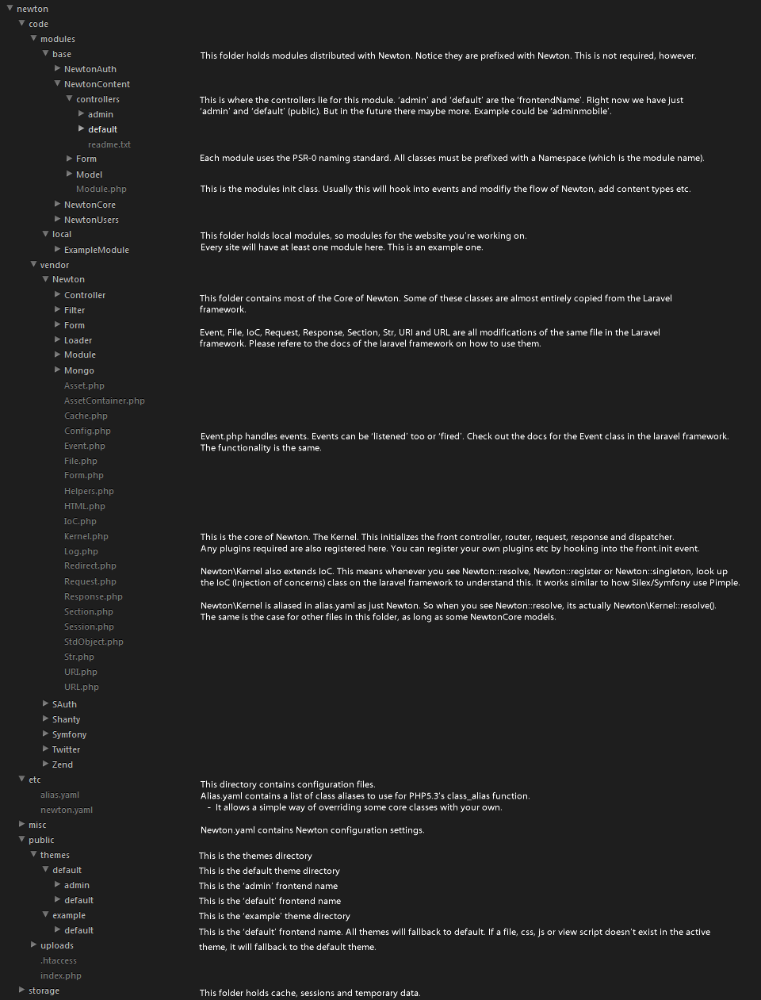

Newton
Prerequisits
Newton requires the following server requirements:
Also, an understanding of the following will prove useful:
- PHP 5.3 Namespaces
- Zend Framework Dispatch Process (Newton is very similar, but doesn't use Zend_Application or any of the Bootstrap functionality. An understanding of the Dispatch process though will be useful (see Zend_Controller_Front::dispatch()).
Please note is that Newton is not finished. The best way to understand Newton is to get it installed (very easy) and to follow the application flow process down to the module, controller and action responsible for the Request.
Installation
- Ensure you have MongoDb and PHP 5.3+ working.
- Extract the contents of the Zip file to a location
- Ensure the storage and its sub-directories are writable by the server
- Setup an apache VirtualHost to point to the public directory of the extracted files (like Zend Framework) (I'm going to call the domain for this example.local)
- Open the file etc/newton.yaml and change the values for theme, dbname and url.
- Look at the modules.enabled, this is the modules that have been enabled and the path to where the module is stored.
- Database collections should be automatically created. You shouldn't have to worry about this.
Now you have setup Newton...
- Goto http://example.local, it should have some error in there. This is because it is looking for a piece of content with the url of 'home'.
- Goto http://example.local/admin, click the Content dropdown, Click 'Manage Pages'. Click create new content. choose 'Default Page'. Called the title 'Home' and press save. Now refresh the frontend and it should be different.
- Play around with it, keep note of the URLS (always useful, helps you track the module/controller/action
Directory Structure

Overview
Newton is based on Zend Framework components. A Zend Framework Application consists of the following:
- Zend_Application (This is not used in Newton, this is replaced with Newton\Kernel and Newton\Module\Manager
- Front Controller
- Router
- Request
- Dispatcher
- Response
In Newton, instead of using Zend_Application to create a new Application, this functionality has been replaced by Newton\Kernel and Newton\Module\Manager. Modules are loaded by Newton\Module\Manager which is initialised so early that Modules hook into Event hooks to modify the application process (adding routes, changing the active site/language, adding content types etc...).
Dispatch Process
The best way to learn Newton is to know the process in which an action is dispatched. So..
- Firstly, lets open public/index.php and look in here. You'll see the environment is set, we require Newton\Kernel and run initWeb();
- Open up code/vendor/Newton/Kernel.php. Take a look through here, you'll see this file basically sets up the whole application.
- Look inside initMvc(). You'll see the Module\Manager is initialised before the front controller. Basically this Module\Manager::init() method finds all modules from newton.yaml, adds the modules to the FrontController, sets the controller directories and then runs the Module::init() on the modules Module.php file.
- Open up code/modules/local/ExampleModule/Module.php
- You'll see in here I hook into the content.types.init event. This event is thrown by NewtonContent\Model\TypeManager::init(). This is so we can add ContentTypes to the NewtonContent module without modifying any code.
Documentation is still being created. Please email me at stuart@gravitywell.co.uk with any questions.
Events
- front.init
- front.dispatch_before
- front.dispatch_after
- site.load_after
- lang.load_after
- module.loaded.{ModuleName}
View Scripts
All layouts can be found public/themes/_themename_/_frontendname_/_layouts/
All viewscripts can be found in public/themes/_themename_/_frontendname_/_template